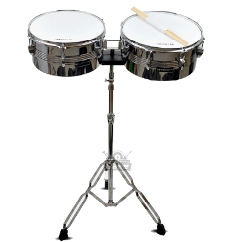

TIMBAL
Consiste en un par de tambores de metal montados en un soporte que se tocan con palos. Cada tambor tiene un tamaño diferente, uno es más grande que el otro, y se colocan uno encima del otro.
El timbal se ha utilizado tradicionalmente en la música afrocubana, especialmente en estilos como el son cubano, el mambo y la salsa. Su sonido distintivo y su capacidad para producir ritmos complejos lo han convertido en un elemento esencial en la música latina y caribeña.
